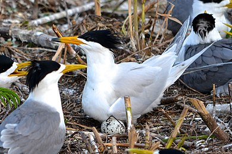

| 黑嘴端鳳頭燕鷗 |
|

|

生物介紹：
黑嘴端鳳頭燕鷗（學名：Thalasseus bernsteini） ，也稱作中華鳳頭燕鷗或黑嘴鳳頭燕鷗，是燕鷗科的一種海鳥。體長約 38 公分，羽色為淺灰色，具醒目的黑色鳳頭，繁殖期頭頂亦為黑色。喙部黃色而先端三分之一為黑色，最尖端部分為白色，因此有黑嘴端鳳頭燕鷗的名稱。尾羽開叉而似燕尾。
分布：
在1999年與2000年馬祖列島的中島上發現紀錄，在中國大陸（山東省北部海岸、福建省閩江口、菲律賓、泰國、印尼、和沙勞越也曾有它們的蹤影。2004年在浙江韭山列島發現另一處繁殖地。澎湖縣野鳥學會2014年6月份在澎湖玄武岩自然保留區的雞善嶼發現黑嘴端鳳頭燕鷗的行影，也是目前全世界已經確認的第3個繁殖地。
原因：
本種為一極危物種，在1999年（至少一隻混雜於大鳳頭燕鷗群中）與2000年（一個大鳳頭燕鷗群集附近發現四頭成鳥和四頭雛鳥）馬祖列島的中島上發現紀錄以前，在文史記載上，已經逾百年未出現過，使其曾一度被認為已經絕種，故有「神話之鳥」之稱。其數目的下降被歸咎於濫採鳥蛋。牠們能夠在馬祖存活，可能的原因是馬祖過去為一處軍事禁區，進入當地被限制有關。
保育：
目前馬祖將黑嘴端鳳頭燕鷗訂為縣鳥，並劃設了一燕鷗保護區。
目前的監測數據表明，該物種的全球種類總量仍少於50隻，在2012年被世界自然保護聯盟列入全球最瀕危的100個物種。